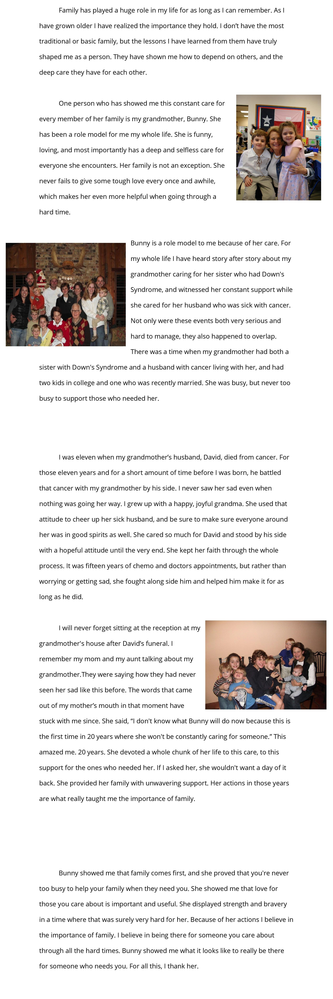

I Believe in the Importance of Family
by: Mallory Clifton

Bio
Mallory Clifton was born in Austin, Texas, and has lived there for most of her life. She moved to London, England for two years after the first grade, and returned to Austin after the end of third grade. Mallory went to Trinity Episcopal School for the time she lived in Austin, and this is her first year at St. Andrews. Her hobbies include playing sports such as volleyball, basketball, and lacrosse. Mallory also likes to spend her free time with her friends and family.